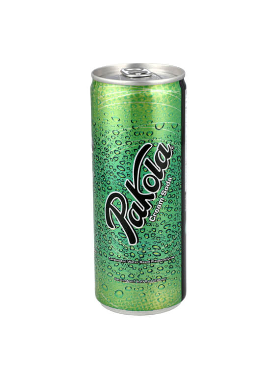

drinks
- cola next
-
 Cola is a refreshing, carbonated soft
drink known for its bold, sweet flavor with hints of vanilla, caramel,
and spice. Served chilled, it's the perfect companion to burgers, fries, and spicy dishes, offering a fizzy,
cooling contrast. Whether enjoyed on its own or as part of a meal, cola is a classic thirst-quencher loved
around the world.
Cola is a refreshing, carbonated soft
drink known for its bold, sweet flavor with hints of vanilla, caramel,
and spice. Served chilled, it's the perfect companion to burgers, fries, and spicy dishes, offering a fizzy,
cooling contrast. Whether enjoyed on its own or as part of a meal, cola is a classic thirst-quencher loved
around the world.
- fizz up
-
 Fizz Up is a lemon-lime flavored carbonated
soft drink, known for its crisp, citrusy taste and refreshing
bubbles. Similar to popular lemon sodas, it offers a tangy kick that pairs perfectly with spicy or fried
foods. Served ice-cold, Fizz Up is a zesty, thirst-quenching beverage ideal for cooling down and
complementing any meal.
Fizz Up is a lemon-lime flavored carbonated
soft drink, known for its crisp, citrusy taste and refreshing
bubbles. Similar to popular lemon sodas, it offers a tangy kick that pairs perfectly with spicy or fried
foods. Served ice-cold, Fizz Up is a zesty, thirst-quenching beverage ideal for cooling down and
complementing any meal.
- pakola
- Pakola
Pakola is a uniquely Pakistani carbonated
soft drink, famous for its bright green color and distinct creamy
flavor, often compared to vanilla or bubblegum. It's sweet, fizzy, and nostalgic — a cultural icon that’s
been a part of celebrations and everyday moments for generations. Best served chilled, Pakola adds a fun and
flavorful twist to any meal or gathering.